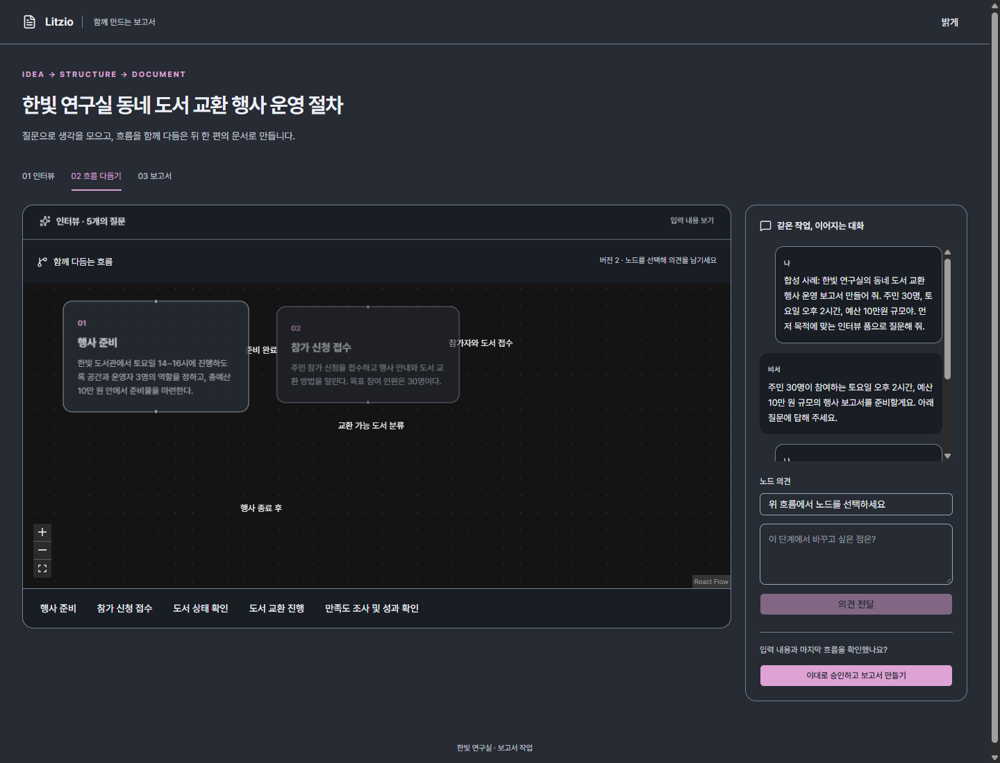
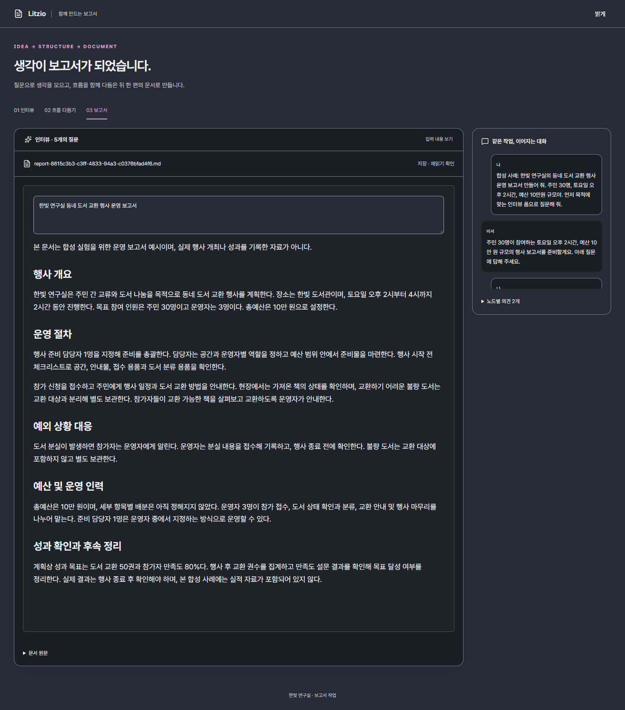

합성 도서 교환 행사. 실제 Litzio Assistant Host → Codex gpt-6-luna / low 5회. 새 문서는 승인 후 공식 create_document로 생성했습니다.
실행 방법·검증·제한 · 실제 호출 검증 · 파일 검사
1440px 실시간 실행에서 촬영한 프레임 시퀀스입니다. 재생 간격은 보기용이며 실제 모델 대기 시간을 뜻하지 않습니다.

640px 모션은 저장된 실제 결과를 다시 렌더링한 시각 검토입니다. 추가 AI 호출·두 번째 AI 성공으로 계산하지 않습니다. 원본 PNG는 visual 폴더에 있습니다.
동일한 디스크 재읽기 결과를 기존 DocumentEditor의 읽기 전용 preview로 표시했습니다. 편집·Save 세션은 연결하지 않았습니다.
1440px · 640px 한국어 다크